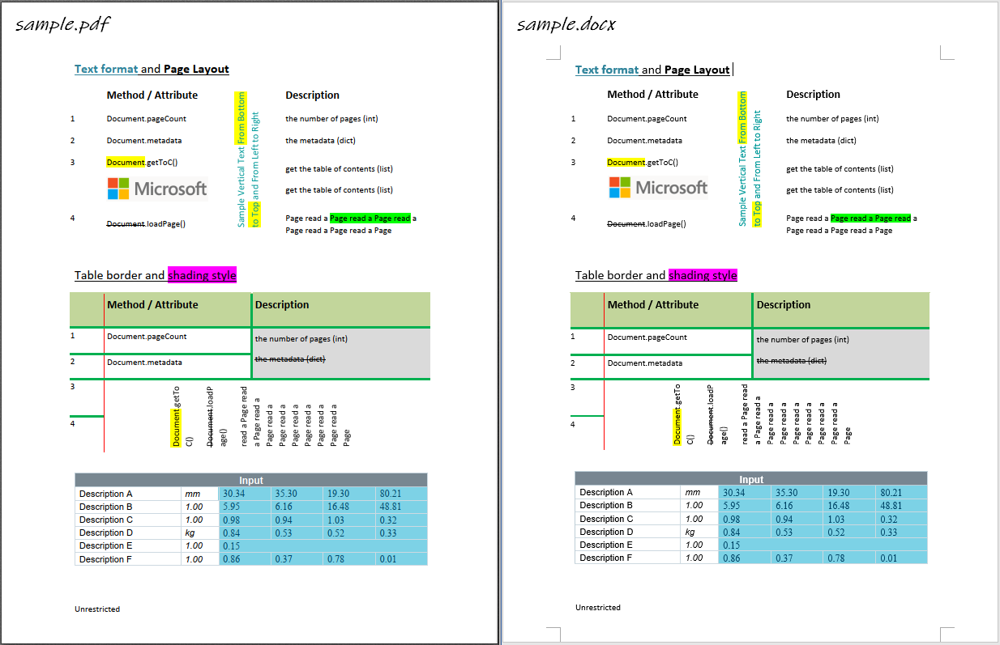

pdf2docx开发概要¶
发布于：2020-07-13 | 分类：process automation
PDF转Word 是一个古老的话题，其难点在于建立PDF基于元素位置的格式与Word基于内容的格式之间的映射关系。Solid Documents是这方面的佼佼者，其技术的应用案例：在线PDF转换网站Smallpdf。
在某个项目的调研过程中，我尝试了这个话题，编写了一个用于转换PDF到Word的Python库pdf2docx——借助PyMuPDF从PDF文件提取内容，基于位置规则解析内容，最后用python-docx创建Word文件。
本文记录主要开发思路，具体细节随着版本升级可能略有差异。

思路¶
-
PDF文件遵循一定的格式规范 1，Python库
PyMuPDF提供了便利的解析函数，用于获取页面元素例如文本和形状及其位置。 -
利用元素间的相对位置关系推断内容，例如将“横纵线条围绕着文本”解析为“表格”，将“文本下方的一条横线”解析为“文本下划线”。这就是本文主角
pdf2docx的主要内容。 -
使用Python库
python-docx将上一步解析的内容元素重建为docx格式的Word文档。
以上技术路线也决定了pdf2docx的局限：
-
只能处理标准格式的PDF，不支持扫描版、图片格式PDF。
-
只能处理水平、竖直方向文本，忽略旋转角度的文本。
-
根据有限的、确定的规则建立PDF导出元素位置与docx要求的内容之间的映射并非完全可靠，也就是说仅能处理常见的规范的格式，而非百分百还原。
目录¶
以下分篇介绍提取PDF页面数据、解析和重建docx过程中的具体细节：